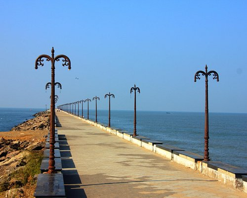
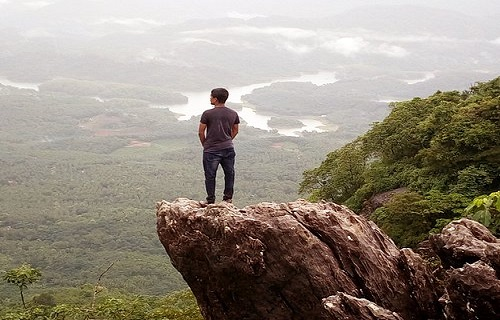

TOP ATTRACTIONS IN KOZHIKODE
BEYPORE BEACH
Beypore beach is an ideal beach destination for tourists as well as of historians. Located at the mouth of river Chaliyar about 10 kilometres away from Kozhikode town (Calicut) in Kerala, Beypore was a port of trade and maritime centre in the olden ages. This ancient port had witnessed much trade and transactions of the Arabian merchants from West Asia, Chinese travellers and later Europeans with the local dealers here. One of the major attractions of this place is the existence of the 1,500 years old tradition of shipbuilding industry.
S.M STREET

Street food is among the most gorgeous innovations in the culinary sphere, and people flock to them to taste the original and raw flavour that one can only get here. The legendary Sweet Meat Street or Mithai Theruvu is the go-to place for such delicacies in Kozhikode district. Named from the times when the street was lined with sweet-meat (halwa) stalls, it is today a popular haunt for locals and tourists alike. Row upon row of stalls, peppered with sweets and savouries and a bunch of other delights, make it among the busiest streets in the entire district.
VAYALADA
The northern region of Kerala may not be as endowed as southern parts of the state when it comes to This picturesque hilltop is about 12km away from Balussery in Kozhikode district. This picturesque hilltop is about 12km away from Balussery in Kozhikode district. Vayalada has earned the sobriquet ‘Kozhikode's Gavi’ after the famous hill station Gavi at Pathanamt.Vayalada, a picturesque hilltop destination in Panangad pachayat favoured by weekend trekkers, will soon get better amenities to help visitors enjoy its scenic charms. The government has, under the Balussery Tourism Corridor Project.